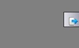
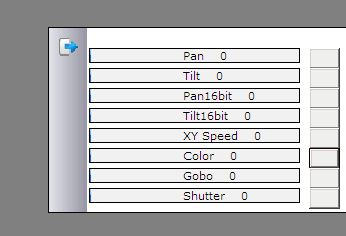
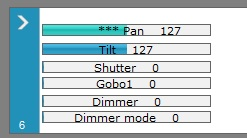
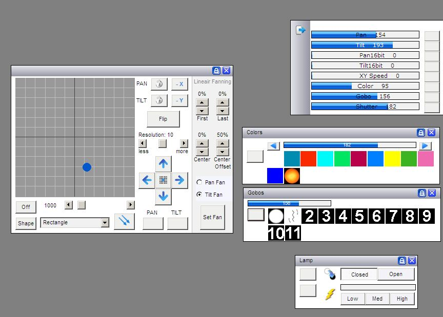
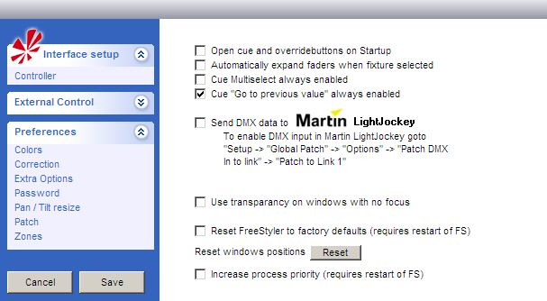

Panel Description - Sliders
Here we will discuss the easiest way to operate / control a fixture in Freestyler. With FS open and no fixtures selected you will notice this icon on the righthand side of the FS desktop. This is where the 'Sliders', also known as faders, will expand from. Now with no fixture selected, run the mouse cursor over this icon and… nothing will happen.

Now asuming that you have selected and added one or more fixtures to your FS desktop, select one or more of the SAME type of fixture by clicking on it / them. Please be careful not to select a mix of different fixtures at this stage. If a mixture of fixtures is selected then the sliders will only show the attributes for the first fixture selected. Now with fixture(s) selected run the mouse cursor over the slider icon and something like this will appear…

Now you can move the slider for each attribute of the fixture simply by moving the mouse cursor onto a slider and then by holding down the left mouse button move the left and right until you get the desired dmx values.
NOTE: Why should i do it like this if you also have the Panels with all the attributes, Thats because NOT allways you have all the functions that a fixture can do displayed on the panels, so sometimes a Fixture can do more then you think.
NOTE: Also look out for the Shutter/Lamp channel most of the time if you have a movinghead you can set the Lamp on and off with these channels. but it can take up to 15min before you can set the lamp on again, also it can be bad if your lamp goes off and on all the time in a small amount of time, so be carefull if you drag these Slider.
Fine control.
It can be a bit tricky to fine control the faders in the fixture control panels with a mouse. In the “Slider” panel the last touched slider can be additional controlled with the +, - on the num pad.
This makes it possible increase / decrease the slider value with 1.
Drop down menu.
By making a “right mouse click” a drop down menu appears where it is possible to make some channel manipulation direct on the fader.
See Panel Description - Slider menu.
If a channel has been manipulated then there will be “***” in front of the name on the slider and the color of the slider change a bit.
This is to indicated that on this channel something is changed so it is not the slider value direct which is send to the fixture.

As an alternative to this slider method mentioned above and as show below you can open up all the fixtures attribute windows and as you adjust the colour wheel, it will show the value on the slider.
{kind=link}

It is possible to have the sliders expand automaticaly as soon as a fixture is selected. This is a option and to switch this feature on you need to navigate to here →
Setup > Freestyler Setup > Preferences > Extra Options
Here you will find a set of tick boxes. The second one down is 'Automactically Expand Faders When Fixture Selected' The other features in this window will be discussed in other documents in the future.

I would encourage you to play with this feature and fully familiarize your self with it. However I would not recommend using this as a way of controlling lighting on a live show.
I should also mention that you will not see the sliders move when sequences are played back from cues and submasters. You CAN see the sliders move if you play a sequence from the 'create sequence' window.